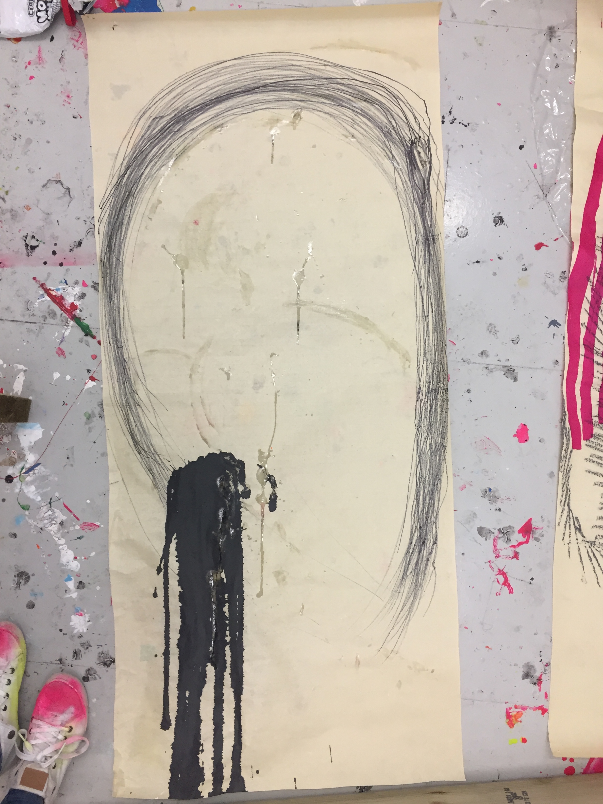

Systems Art in my Practice
A website setting out research into working with computers to produce art. Check out www.theartisticaccountant.com for my research blog
DrawCommandDrawCommand is an instruction generator which combines my fine art systems practice with a computer programme. Some of the elements I used in my fine art practice to make work, such as, duration, intervals of time, material, and action, are randomly selected and combined by the programme and I then carry out the instructions. It is an experiment in the computer telling me what to do in a systems art context. |
Systems art and DrawCommandDrawCommand, along with Imitation of Life, is also exploring which surface my physical hand essentially meets the non-physical computer hand in this version of systems art - my physical hand into the non-physical screen, the computer light projected on the physical canvas, or a physical computer hand on a canvas. It is essentially testing my comfort levels in different situations. I was much more comfortable working with the computer in DrawCommand than in the sketches in Imitation of Life rather than trying to work with light on a physical object. Conceptually, I am also drawn to the idea of the role of the computer and artist being inverted or mixed up in this exercise. From a systems art viewpoint, the idea of the system starting with the computer and ending with the artist rather than starting with the artist and being carried out by the same artist or another artist is quite engaging.

×

×

×
Creating a more sophisticated DrawCommand programme to develop the range of elements is a possible direction for this work. I could pull elements from the systems practices of other systems artists working in the 1960s and 1970s, I could break down the computer into elements like I did with drawing and combine the two in a hybrid system (light, color, random could be computer elements, for example). I am interested in exploring systems art (LINK) in the context of this work and computation as a whole. However, rather than trying to reduce the influence of the artist as has been common in systems art practices (and which is impossible), I want to involve the artist more openly in the system. The work I see is the artist and computer interacting with the system in a more equal way, as two artists could, and updating the possible future for systems art. I am not seeking to make a computer artist, because I do not think that is possible (LINK), however, I have been looking at Harold Cohen (LINK TO MY BLOG) who regarded AARON as a separate artist and Roman Verostko (LINK) who questioned whether his Hodos software could replace his hand. I have been researching their work because they treat the computer as a computer and also as a parallel to themselves, or replacement of themselves, without trying to pretend the computer is alive, or creative like they are. |